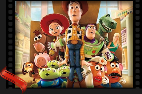

Sobre Mí
Hola, soy Sergio y soy un apasionado del cine. Con Filmix quiero compartir mis películas favoritas, recomendaciones y reseñas para que todos los amantes del cine puedan descubrir nuevas historias y disfrutar de grandes experiencias cinematográficas. Aquí encontrarás listas personalizadas, artículos y noticias relacionadas con el mundo del cine.
Mi Idea
- Películas Favoritas: Desde clásicos hasta estrenos recientes, comparto mis selecciones y opiniones personales sobre cada película.
 Experiencia: Durante mi
formación y proyectos personales, he explorado diferentes géneros y estilos, creando listas y
recomendaciones para mis amigos y seguidores.
Experiencia: Durante mi
formación y proyectos personales, he explorado diferentes géneros y estilos, creando listas y
recomendaciones para mis amigos y seguidores. Proyectos: Filmix es mi proyecto
principal, donde fusiono mi pasión por el cine con tecnología para ofrecer una plataforma dinámica y
útil para todos los cinéfilos.
Proyectos: Filmix es mi proyecto
principal, donde fusiono mi pasión por el cine con tecnología para ofrecer una plataforma dinámica y
útil para todos los cinéfilos.